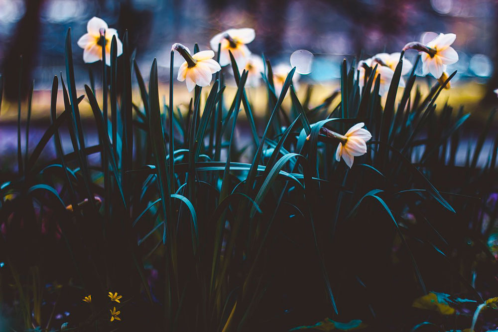
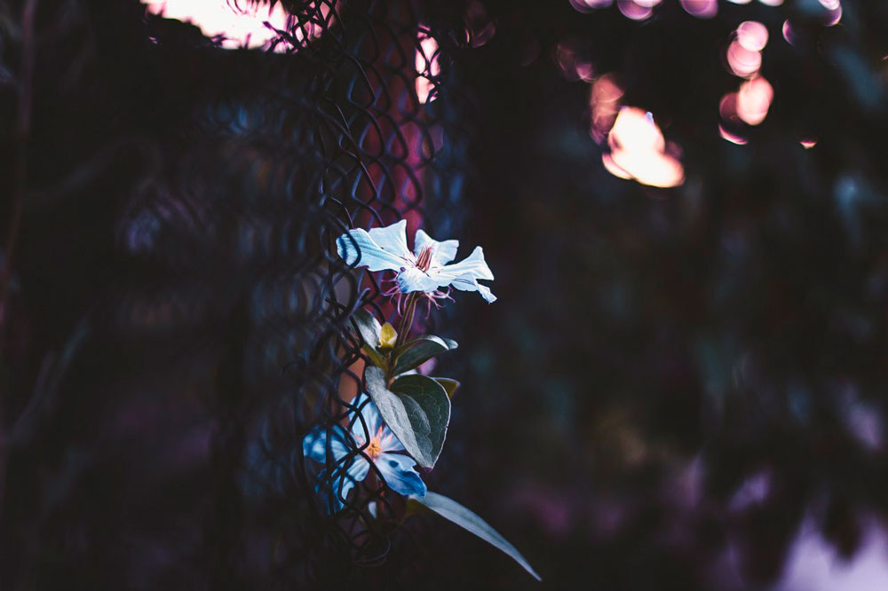
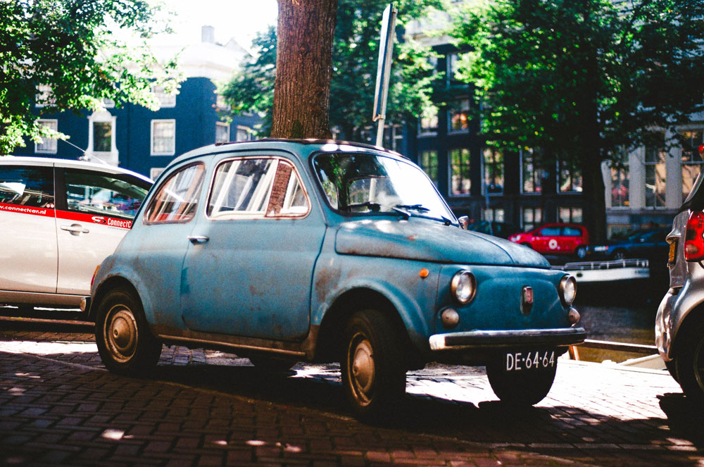
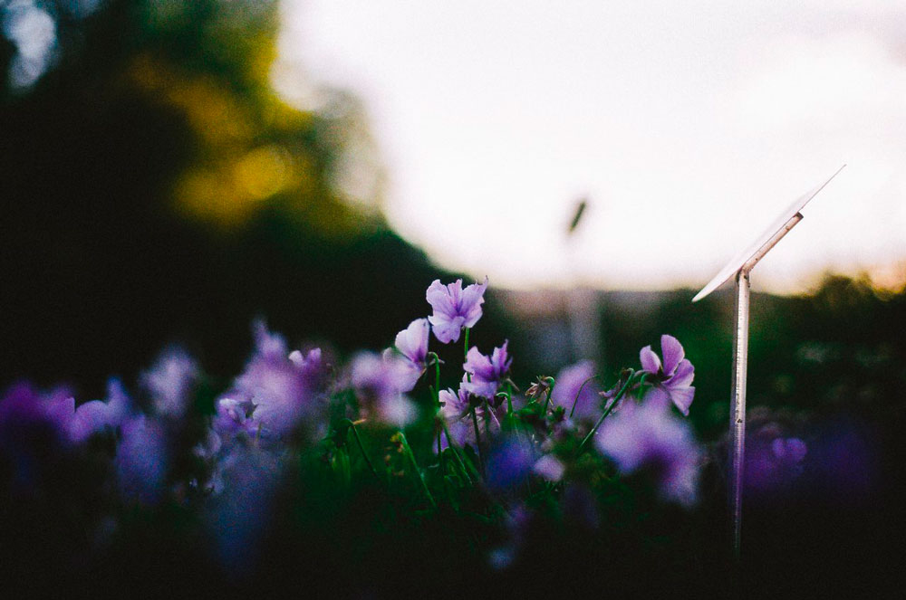
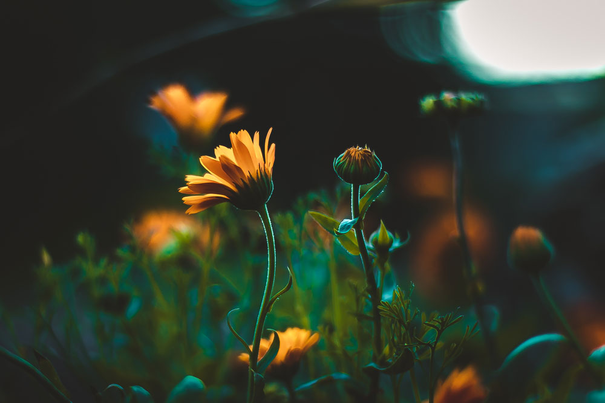
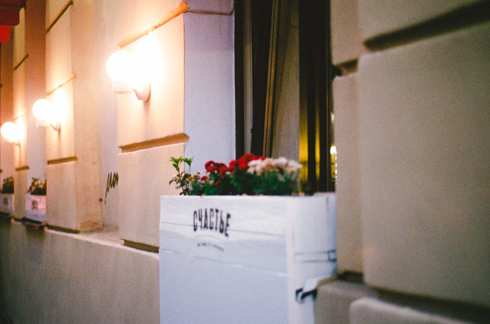
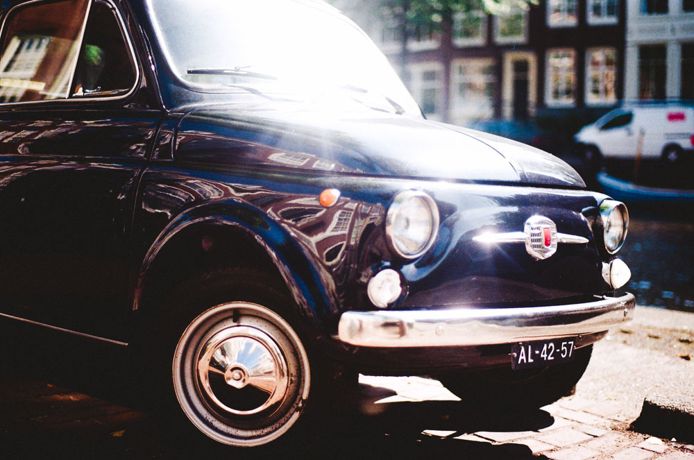

Цифровое фото
Плёночное фото
Плёночное путешествие




new

Сентябрь 2016
Санкт-Петербург. Ботанический сад, 2016. Canon 60d+canon 50mm 1/4

Сентябрь 2016
Санкт-Петербург, 2016. Pentax ME

Сентябрь 2016
Амстердам. Плёнка 2016. Pentax ME